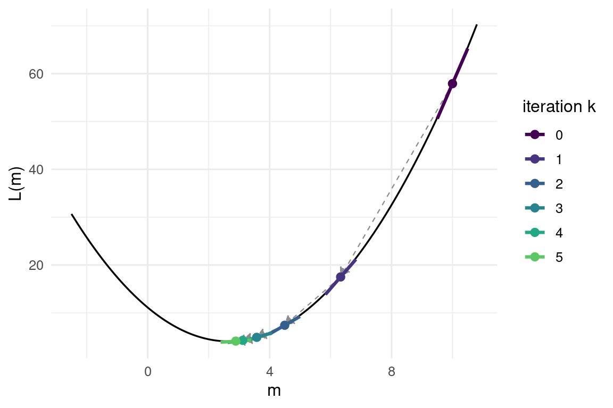
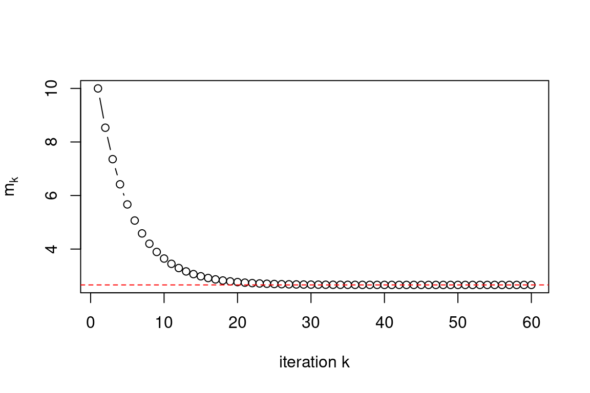
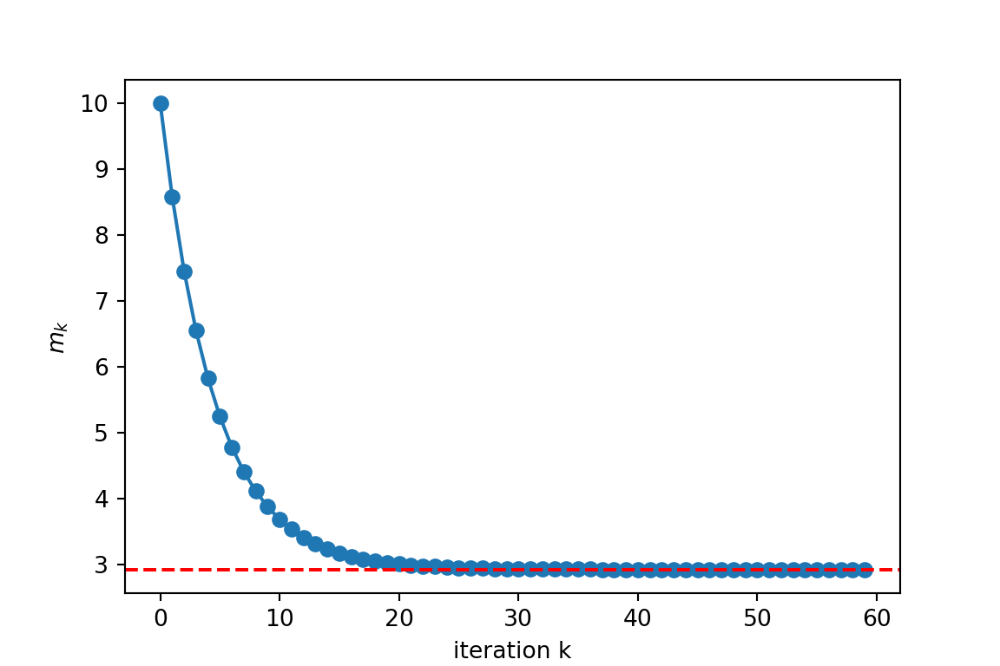
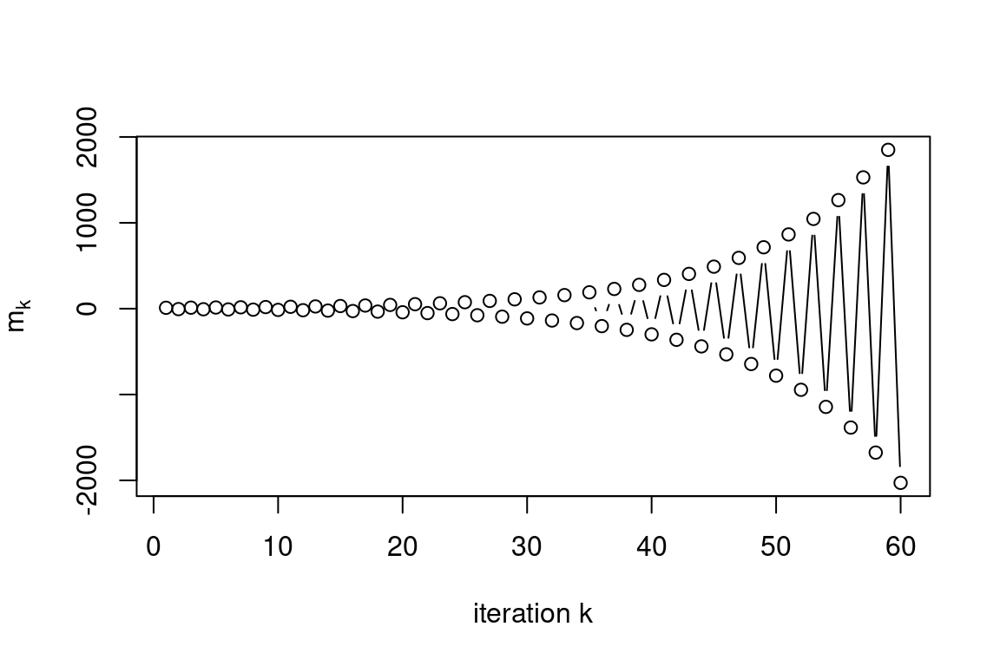
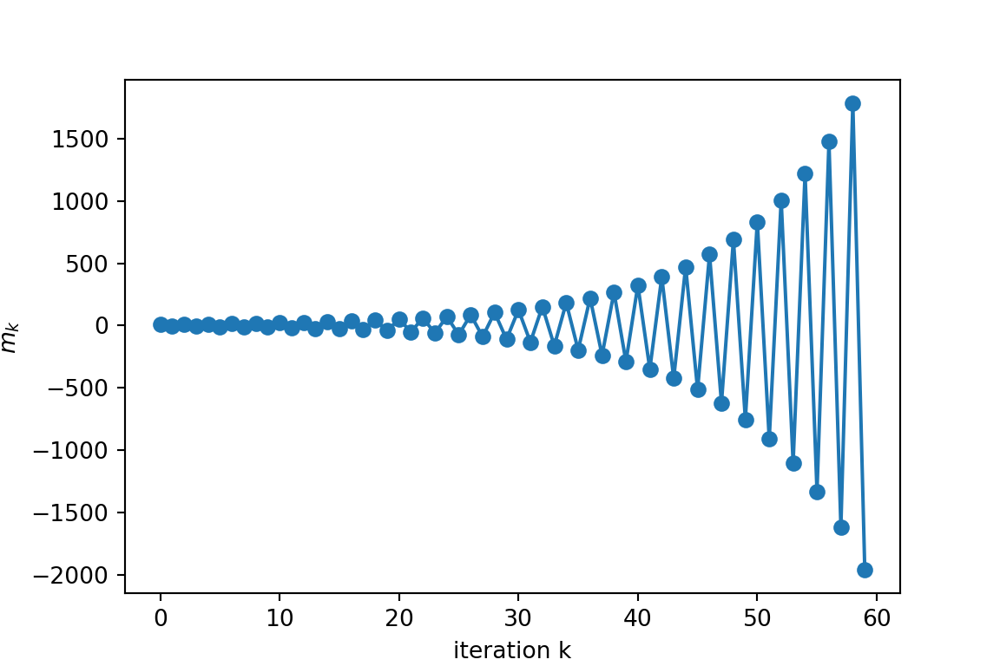
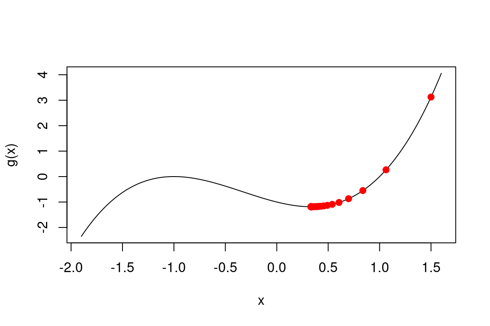
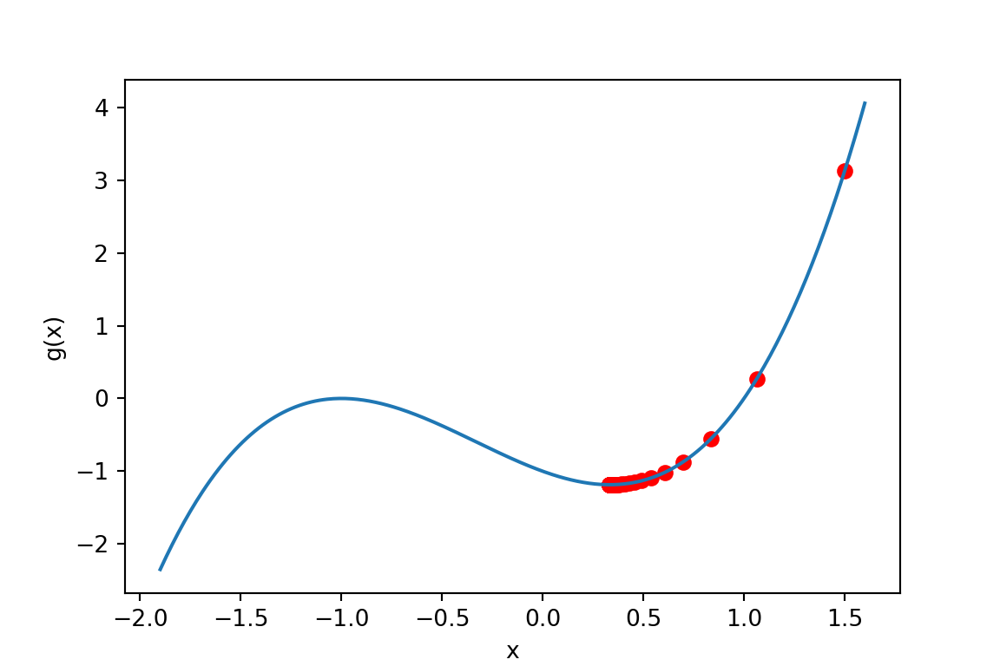

2 == 2[1] TRUE"Hello" == "hello" # case matters[1] FALSE3 != pi[1] TRUE2 < 3[1] TRUE7 >= 7[1] TRUELast week (Chapter 1) we taught the computer arithmetic. This week we teach it to make decisions and to repeat itself: the two ingredients that turn a calculator into an algorithm. By the end of the chapter we will have built our first genuinely useful one: gradient descent, the workhorse optimiser behind most of modern statistics and machine learning (Section 2.8). Everything else in this chapter is training for that final section.
A comparison takes two values and returns a logical: TRUE or FALSE. The operators are == (equal), != (not equal), <, >, <= and >=.
R
2 == 2[1] TRUE"Hello" == "hello" # case matters[1] FALSE3 != pi[1] TRUE2 < 3[1] TRUE7 >= 7[1] TRUEPython
import math # pi lives in the math module
2 == 2True"Hello" == "hello" # case mattersFalse3 != math.piTrue2 < 3True7 >= 7TrueNote the double = in ==: a single = is assignment, and mixing the two up is a rite of passage.
Note for Python: R spells its logicals TRUE and FALSE; Python capitalises only the first letter, True and False. Same objects, different outfits, and each language rejects the other’s spelling.
Like arithmetic, comparisons are vectorised: comparing a vector against a scalar (or another vector: R recycles, numpy broadcasts; Chapter 1) gives a whole vector of logicals.
R
x <- c(1, 4, 9, 16)
x > 5[1] FALSE FALSE TRUE TRUEx == c(1, 2, 9, 20)[1] TRUE FALSE TRUE FALSEPython
import numpy as np # vectors live in numpy
x = np.array([1, 4, 9, 16])
x > 5array([False, False, True, True])x == np.array([1, 2, 9, 20])array([ True, False, True, False])One trap worth knowing now: comparing anything with NA (a missing value) gives NA, not FALSE: R refuses to claim it knows how a missing value compares. To test for missingness use is.na().
R
NA == NA[1] NAis.na(c(1, NA, 3))[1] FALSE TRUE FALSEPython
np.nan == np.nanFalsenp.isnan(np.array([1, np.nan, 3]))array([False, True, False])Note for Python: Python has no true missing-value marker like R’s NA. The closest stand-in is the floating-point “not a number”, np.nan. But where R’s NA propagates through comparisons (NA == NA is NA), nan simply compares False to everything, including itself. Test for it with np.isnan(), never with ==. (Proper missing-data handling arrives with pandas in Chapter 4.)
Here is the most famous line of code in numerical computing:
R
0.1 + 0.2 == 0.3[1] FALSEPython
0.1 + 0.2 == 0.3FalseR is not broken, and Python agrees, which should tell you something. This section is entirely language-shared: both languages store decimals in the same IEEE 754 double-precision binary floating point, and just as 1/3 has no finite decimal expansion, 0.1 has no finite binary one. What gets stored is the nearest representable number, correct to about 16 significant digits, and the tiny rounding errors surface when you compare:
R
print(0.1 + 0.2, digits = 17)[1] 0.30000000000000004print(0.3, digits = 17)[1] 0.29999999999999999Python
print(f"{0.1 + 0.2:.17g}")0.30000000000000004print(f"{0.3:.17g}")0.29999999999999999The rule: never test floating-point numbers for exact equality. Ask instead whether they are equal up to a small tolerance, either by hand or with a ready-made helper: all.equal() in R, math.isclose() in Python (with np.isclose() / np.allclose() as the array versions):
R
abs((0.1 + 0.2) - 0.3) < 1e-8[1] TRUEall.equal(0.1 + 0.2, 0.3)[1] TRUEPython
abs((0.1 + 0.2) - 0.3) < 1e-8Truemath.isclose(0.1 + 0.2, 0.3)TrueCareful: when the numbers differ, all.equal() returns a description of the difference rather than FALSE, so inside a condition wrap it as isTRUE(all.equal(a, b)).
R
all.equal(1, 1.5) # not FALSE![1] "Mean relative difference: 0.5"isTRUE(all.equal(1, 1.5)) # this is what you test[1] FALSEPython
math.isclose(1, 1.5) # a plain False: nothing to wrapFalseNote for Python: the isTRUE() dance is an R quirk. math.isclose() returns a plain True/False you can test directly; the Python column above is only there to prove it.
Predict the result of each comparison, then run them:
0.1 + 0.3 == 0.40.1 + 0.2 + 0.3 == 0.6sqrt(2)^2 == 21e5 / (1e5 + 1e-16) == 1(Python: item (c) is math.sqrt(2)**2 == 2; recall ** is Python’s power operator. The other three run as written.)
Explain what you see, and rewrite the FALSE comparisons so that they return TRUE for the right reason.
Logicals can be combined with & (AND), | (OR) and ! (NOT):
a & b is TRUE only when both are TRUE;a | b is FALSE only when both are FALSE;!a flips the value.R
TRUE & FALSE[1] FALSETRUE | FALSE[1] TRUE!TRUE[1] FALSExor(TRUE, TRUE) # exclusive OR: TRUE when exactly one is TRUE[1] FALSEPython
True and FalseFalseTrue or FalseTruenot TrueFalseTrue ^ True # exclusive OR: True when exactly one is TrueFalseNote for Python: on single logicals the operators are words: and, or, not (and ^ doubles as xor on booleans). Python’s & and | exist too, but as elementwise operators: they become important on numpy arrays in a moment.
In R, comparisons bind tighter than logical operators, and & binds tighter than |, so x > 2 & x < 5 means what you hope it means. Note for Python: numpy’s & and | bind tighter than comparisons, so that same line would be read as x > (2 & x) < 5, so parentheses around every comparison are mandatory: (x > 2) & (x < 5). When in doubt, in either language, parenthesise; future you will be grateful.
All three operators are vectorised (R uses the same &, |, ! on vectors; numpy’s elementwise trio is &, |, ~), which lets us combine conditions elementwise:
R
x <- c(1, 4, 9, 16)
x > 2 & x < 10[1] FALSE TRUE TRUE FALSEx < 2 | x > 10[1] TRUE FALSE FALSE TRUEPython
x = np.array([1, 4, 9, 16])
(x > 2) & (x < 10)array([False, True, True, False])(x < 2) | (x > 10)array([ True, False, False, True])&& / and versus &R also has doubled-up operators && and ||. They work only on single logicals and error on vectors:
R
c(TRUE, FALSE) && TRUEError in c(TRUE, FALSE) && TRUE: 'length = 2' in coercion to 'logical(1)'Python
np.array([True, False]) and TrueValueError: The truth value of an array with more than one element is ambiguous. Use a.any() or a.all()They also short-circuit: a && b never evaluates b if a is already FALSE. That makes them the right choice inside if() conditions (coming up shortly), where you want exactly one TRUE/FALSE and you may want the second check skipped when the first fails, e.g. n > 0 && x[n] > 5 never touches x[n] when n is 0. Rule of thumb: &/| for vectors, &&/|| for if conditions.
Note for Python: there is no doubled-up operator to learn, and nothing missing, either. Python’s and/or are the single-value, short-circuiting pair (n > 0 and x[n - 1] > 5 skips the second check exactly like R’s &&), while &/| are the elementwise pair. As the error above shows, and on a numpy array refuses to guess. The rule of thumb translates directly: &/| for arrays, and/or for if conditions.
any(), all() and %in% / inTwo functions collapse a logical vector down to a single verdict:
R
x <- c(1, 4, 9, 16)
any(x > 10) # is at least one element > 10?[1] TRUEall(x > 0) # are they all positive?[1] TRUEPython
x = np.array([1, 4, 9, 16])
np.any(x > 10) # is at least one element > 10?np.True_np.all(x > 0) # are they all positive?np.True_And %in% checks membership (Python: the in operator for a single value, np.isin() for a whole array), which beats chaining many == together with |:
R
5 %in% c(1, 3, 5, 7)[1] TRUEc(2, 5, 8) %in% c(1, 3, 5, 7) # vectorised on the left[1] FALSE TRUE FALSEPython
5 in [1, 3, 5, 7]Truenp.isin([2, 5, 8], [1, 3, 5, 7]) # vectorised on the leftarray([False, True, False])A year is a leap year if it is divisible by 4, except that century years (divisible by 100) are not, unless they are also divisible by 400. So 2024 and 2000 are leap years; 2023 and 1900 are not.
Store a year in a variable and write a single logical expression (no if needed) that is TRUE exactly when it is a leap year. The modulo operator %% (% in Python) gives remainders: 2024 %% 4 == 0. Check your expression on 2024, 2023, 2000 and 1900.
Last week we indexed vectors by position: x[3], x[c(1, 5)]. The second (and in statistics, far more useful) way is to index with a logical vector: both R and numpy keep the elements where the index is TRUE.
R
x <- c(2, 7, 1, 9, 4)
x[c(FALSE, TRUE, FALSE, TRUE, FALSE)][1] 7 9Python
x = np.array([2, 7, 1, 9, 4])
x[np.array([False, True, False, True, False])]array([7, 9])Nobody types logical vectors by hand, of course. The point is that comparisons produce them, so we can filter a vector by any condition:
R
x[x > 3] # elements greater than 3[1] 7 9 4x[x %% 2 == 0] # the even ones[1] 2 4x[x > 3 & x < 9] # combined conditions[1] 7 4Python
x[x > 3] # elements greater than 3array([7, 9, 4])x[x % 2 == 0] # the even onesarray([2, 4])x[(x > 3) & (x < 9)] # combined conditionsarray([7, 4])Read x[x > 3] inside-out: x > 3 builds the logical vector, and x[...] uses it as a sieve. A few companions:
R
which(x > 3) # the positions of the TRUEs[1] 2 4 5sum(x > 3) # counts them: TRUE is 1, FALSE is 0[1] 3mean(x > 3) # the proportion of TRUEs[1] 0.6Python
np.where(x > 3)[0] # the positions of the Truesarray([1, 3, 4])np.sum(x > 3) # counts them: True is 1, False is 0np.int64(3)np.mean(x > 3) # the proportion of Truesnp.float64(0.6)Note for Python: which()’s companion np.where(condition) returns a tuple of index arrays (one per dimension); the [0] extracts the one we want. And of course the positions are 0-based where R’s are 1-based.
That last trick (the mean() of a logical vector is a proportion) is one of the most-used idioms in statistical computing. Here it is verifying the “68–95” rule for the normal distribution on simulated data (we set the seed so the “random” numbers are reproducible):
R
set.seed(7432)
z <- rnorm(10000) # 10,000 standard normal draws
mean(abs(z) < 1) # theory says about 0.68[1] 0.6808mean(abs(z) < 2) # theory says about 0.95[1] 0.9549Python
rng = np.random.default_rng(7432)
z = rng.standard_normal(10000) # 10,000 standard normal draws
np.mean(np.abs(z) < 1) # theory says about 0.68np.float64(0.6794)np.mean(np.abs(z) < 2) # theory says about 0.95np.float64(0.9549)A note on seeds in two languages. set.seed(7432) and rng = np.random.default_rng(7432) each make their own language reproducible, but R and numpy use different generators: the two columns above print different numbers, and always will. Never expect the R and Python streams to match: expect each to match itself on every re-run, and both to agree with the theory.
Logical indexing also works on the left of an assignment, replacing just the selected elements:
R
x <- c(2, 7, 1, 9, 4)
x[x > 5] <- 0 # censor the large values
x[1] 2 0 1 0 4Python
x = np.array([2, 7, 1, 9, 4])
x[x > 5] = 0 # censor the large values
xarray([2, 0, 1, 0, 4])Take your leap-year expression from Exercise 2.2 and apply it to the vector years <- 1900:2025 (it is vectorised for free; that’s the beauty of it). (Python: years = np.arange(1900, 2026), and remember the parentheses around each comparison.)
Logic becomes control flow with if: run a block of code only when a condition holds.
R
x <- 10
if (x > 0) {
print("x is positive")
}[1] "x is positive"Python
x = 10
if x > 0:
print("x is positive")x is positiveIn R the condition goes in ( ) and the code to run goes in { }; in Python there are no parentheses or braces: a colon : ends the condition, and the body is delimited by indentation (consistent, four spaces by convention), which in Python is syntax, not cosmetics. In both languages the condition must evaluate to a single TRUE or FALSE. Add alternatives with else if (elif in Python) and a catch-all else: the first branch whose condition is TRUE runs, and the rest are skipped:
R
x <- -3
if (x < 0) {
print("x is negative")
} else if (x == 0) {
print("x is zero")
} else {
print("x is positive")
}[1] "x is negative"Python
x = -3
if x < 0:
print("x is negative")
elif x == 0:
print("x is zero")
else:
print("x is positive")x is negativeA classic example is FizzBuzz, once allegedly a job-interview filter: print “Fizz” if a number is divisible by 3, “Buzz” if by 5, “FizzBuzz” if by both, and the number otherwise. Order matters: the both-case must come first, or it can never be reached:
R
n <- 15
if (n %% 3 == 0 && n %% 5 == 0) {
print("FizzBuzz")
} else if (n %% 3 == 0) {
print("Fizz")
} else if (n %% 5 == 0) {
print("Buzz")
} else {
print(n)
}[1] "FizzBuzz"Python
n = 15
if n % 3 == 0 and n % 5 == 0:
print("FizzBuzz")
elif n % 3 == 0:
print("Fizz")
elif n % 5 == 0:
print("Buzz")
else:
print(n)FizzBuzzBecause if needs a single logical, feeding it a vector is an error:
R
x <- c(1, 4, 9)
if (x > 2) print("big")Error in if (x > 2) print("big"): the condition has length > 1Python
x = np.array([1, 4, 9])
if x > 2: print("big")ValueError: The truth value of an array with more than one element is ambiguous. Use a.any() or a.all()Both languages refuse, each in its own words: R demands a condition of length one; numpy declares the truth value of an array ambiguous and points you to .any() / .all().
ifelse() / np.where()When you want an elementwise either/or across a whole vector, use ifelse() in R: it takes a logical vector and picks from two alternatives, per element, in one line. Python has no vectorised ifelse() of its own; np.where(condition, yes, no) is the numpy idiom that fills the role:
R
marks <- c(35, 62, 58, 71, 24)
ifelse(marks >= 40, "pass", "fail")[1] "fail" "pass" "pass" "pass" "fail"Python
marks = np.array([35, 62, 58, 71, 24])
np.where(marks >= 40, "pass", "fail")array(['fail', 'pass', 'pass', 'pass', 'fail'], dtype='<U4')p and write an if / else if / else chain (Python: elif) that prints "significant at the 1% level" if p < 0.01, "significant at the 5% level" if p < 0.05, and "not significant" otherwise. Test it on p = 0.003, p = 0.02 and p = 0.7.p_values <- c(0.001, 0.02, 0.049, 0.051, 0.2) in a single line, by nesting one ifelse() inside another (in Python, one np.where() inside another).for loopsA for loop repeats a block of code once for each element of a sequence:
R
for (i in 1:5) {
print(i^2)
}[1] 1
[1] 4
[1] 9
[1] 16
[1] 25Python
for i in range(1, 6):
print(i**2)1
4
9
16
25The loop variable i takes each value in turn, and the block runs once per value. Note for Python: range(1, 6) produces 1, 2, 3, 4, 5; the stop value is excluded, the mirror image of R’s inclusive 1:5. Forgetting this off-by-one is the classic porting bug in both directions. You can loop over any vector, not just integers (in Python, over any iterable: lists, arrays, strings, ranges):
R
for (day in c("Mon", "Tue", "Wed")) {
print(day)
}[1] "Mon"
[1] "Tue"
[1] "Wed"Python
for day in ["Mon", "Tue", "Wed"]:
print(day)Mon
Tue
WedWhen you need positions rather than values, prefer seq_along(x) to 1:length(x). They agree on non-empty vectors, but on an empty vector 1:length(x) is 1:0 (the sequence c(1, 0)), so the loop runs twice on nothing at all, usually with baffling errors. seq_along produces an empty sequence and the loop correctly runs zero times.
Note for Python: the positions idiom is range(len(x)), the direct companion of seq_along(x), just 0-based, and it has no empty-vector trap: range(0) is empty, so the loop correctly runs zero times. Since the positions start at 0, anything arithmetic done with them (like the divide-by-position below) needs an i + 1.
R
x <- c(10, 20, 30)
for (i in seq_along(x)) {
print(x[i] / i)
}[1] 10
[1] 10
[1] 10Python
x = np.array([10, 20, 30])
for i in range(len(x)):
print(x[i] / (i + 1)) # i runs 0, 1, 2, hence the + 110.0
10.0
10.0if chain from earlier in a for loop that plays the game for every number from 1 to 30.x <- as.character(1:30) (Python: x = np.arange(1, 31).astype(str)) and use logical indexing to overwrite the right entries with "Fizz", "Buzz" and "FizzBuzz". Think about the order of the replacements.If everything a loop does could be done elementwise, we wouldn’t need loops (more on this soon). Loops earn their keep when there is state: when step i depends on the result of step i-1. The classic example is the Fibonacci sequence,
r_i = r_{i-1} + r_{i-2}, \qquad r_1 = r_2 = 1,
where each element is the sum of the previous two: no way to compute element 20 without computing 19 and 18 first. With a loop it is immediate: we create a vector, then fill it in order, using earlier entries to build later ones.
R
n <- 20
fib <- numeric(n) # a vector of n zeros, to be filled
fib[1] <- 1
fib[2] <- 1
for (i in 3:n) {
fib[i] <- fib[i - 1] + fib[i - 2]
}
fib [1] 1 1 2 3 5 8 13 21 34 55 89 144 233 377 610
[16] 987 1597 2584 4181 6765Python
n = 20
fib = np.zeros(n) # a vector of n zeros, to be filled
fib[0] = 1
fib[1] = 1
for i in range(2, n):
fib[i] = fib[i - 1] + fib[i - 2]
fibarray([1.000e+00, 1.000e+00, 2.000e+00, 3.000e+00, 5.000e+00, 8.000e+00,
1.300e+01, 2.100e+01, 3.400e+01, 5.500e+01, 8.900e+01, 1.440e+02,
2.330e+02, 3.770e+02, 6.100e+02, 9.870e+02, 1.597e+03, 2.584e+03,
4.181e+03, 6.765e+03])If a loop confuses you, the universal debugging move is to put print() statements inside it (print i, print fib[i]) and watch the state evolve iteration by iteration.
In the code above we preallocated: numeric(n) (np.zeros(n)) created the full-length vector up front, and the loop only filled slots. The tempting alternative is to start empty and grow with c() (np.append()):
R
squares <- c()
for (i in 1:10000) {
squares <- c(squares, i^2) # don't do this
}Python
squares = np.array([])
for i in range(1, 10001):
squares = np.append(squares, i**2) # don't do thisThis works, but every c() call (and every np.append() call) builds a brand-new copy of the whole vector, so filling n slots costs on the order of n^2 copying. Let’s measure the difference: in R with the microbenchmark package, in Python with the standard-library timeit module. Both run each expression several times, so we judge by the distribution of timings rather than one noisy measurement:
R
library(microbenchmark)
n <- 10000
microbenchmark(
grow = {
squares <- c()
for (i in 1:n) squares <- c(squares, i^2)
},
preallocate = {
squares <- numeric(n)
for (i in 1:n) squares[i] <- i^2
},
times = 10
)Unit: milliseconds
expr min lq mean median uq max neval
grow 55.797520 62.623015 71.095533 63.965677 65.458148 141.043127 10
preallocate 1.039057 1.111635 1.340772 1.276112 1.387438 1.947242 10
cld
a
bPython
import timeit
n = 10000
def grow():
squares = np.array([])
for i in range(1, n + 1):
squares = np.append(squares, i**2)
def preallocate():
squares = np.zeros(n)
for i in range(1, n + 1):
squares[i - 1] = i**2
# best of 10 runs of each, in milliseconds
min(timeit.repeat(grow, number=1, repeat=10)) * 100018.991970000115543min(timeit.repeat(preallocate, number=1, repeat=10)) * 10000.7897479999883217Note for Python: timeit wants a function to call, hence the two defs. A full treatment of writing functions is Chapter 3’s business; for now, def name(): ... simply packages the block. timeit.repeat(f, number=1, repeat=10) returns ten timings in seconds; the minimum is the honest estimate, and we scale it to milliseconds.
Same result, dozens of times apart: roughly fifty-fold in the R run, twenty-odd-fold in the Python one, and the magnitudes, not the exact numbers, are the message. Since the copying cost is quadratic, the gap widens as n grows. The habit to build, in either language: decide the size first, allocate, then fill.
Note for Python: the quadratic sin here belongs to numpy arrays. Plain Python lists over-allocate as they grow, so my_list.append(...) is genuinely cheap, and building a list then converting with np.array(my_list) is idiomatic Python. For numerical work, preallocating the numpy array as above remains the habit to build.
while, break and nextA for loop needs to know in advance how many times to run. A while loop keeps going as long as a condition holds, ideal when the number of iterations is itself the unknown.
R
i <- 1
while (i <= 5) {
print(i)
i <- i + 1
}[1] 1
[1] 2
[1] 3
[1] 4
[1] 5Python
i = 1
while i <= 5:
print(i)
i = i + 1 # i += 1 is the common shorthand1
2
3
4
5The line i <- i + 1 (Python: i = i + 1) is load-bearing: forget to update the state and the condition never becomes FALSE, so the loop runs forever. (If that happens, the Stop button or Esc in RStudio, or Ctrl+C at a console, is your friend. We’ve all been there.)
A more statistical example: how many draws from a standard normal until we see one above 2? The answer is random, so a for loop can’t know its own length; a while loop is the natural fit.
R
set.seed(1)
attempts <- 0
z <- 0
while (z <= 2) {
z <- rnorm(1) # one fresh draw
attempts <- attempts + 1
}
attempts[1] 61Python
rng = np.random.default_rng(1)
attempts = 0
z = 0
while z <= 2:
z = rng.standard_normal() # one fresh draw
attempts = attempts + 1
attempts31(Theory check: P(Z > 2) \approx 0.023, so on average we expect about 1/0.023 \approx 44 attempts. The two columns disagree (61 draws in the R run, 31 in the Python run) because the two seeded streams differ; both counts are perfectly ordinary draws from the same geometric distribution with mean about 44.)
Two keywords fine-tune any loop: next (continue in Python) skips the rest of the current iteration, and break (the same word in both languages) exits the loop immediately.
R
for (i in 1:10) {
if (i == 5) next # skip 5
if (i > 8) break # stop after 8
print(i)
}[1] 1
[1] 2
[1] 3
[1] 4
[1] 6
[1] 7
[1] 8Python
for i in range(1, 11):
if i == 5: continue # skip 5
if i > 8: break # stop after 8
print(i)1
2
3
4
6
7
8Use them sparingly: a loop that jumps around is harder to reason about, and often a clearer while condition can express the same logic.
You invest £1000 at 5% interest per year, compounded annually.
while loop to find how many whole years it takes for the balance to at least double.Time for a confession: much of what beginners write loops for, R and numpy already do better with the vectorised operations of Chapter 1. Squaring a million numbers needs no loop: x^2 (x**2) is the loop, executed in fast compiled code rather than element-by-element in the interpreter:
R
x <- 1:1000000
microbenchmark(
loop = {
out <- numeric(length(x))
for (i in seq_along(x)) out[i] <- x[i]^2
},
vectorised = x^2,
times = 10
)Unit: microseconds
expr min lq mean median uq max neval cld
loop 33272.428 34229.869 35054.607 34985.29 35342.750 36971.65 10 a
vectorised 877.117 976.187 9652.591 2925.89 3870.618 73673.59 10 bPython
x = np.arange(1, 1000001)
def loop():
out = np.zeros(len(x))
for i in range(len(x)):
out[i] = x[i]**2
def vectorised():
x**2
# best of 10 runs of each, in milliseconds
min(timeit.repeat(loop, number=1, repeat=10)) * 1000174.46774199993342min(timeit.repeat(vectorised, number=1, repeat=10)) * 10000.2561270000569493The vectorised version is tens of times faster in the R run, and hundreds of times in the Python one, where every trip around an interpreted loop (plus the numpy machinery invoked on each single element) costs more. And that is against a well-written, preallocated loop; against a sloppy one the gap stretches further still, as Exercise 2.7 will show. The same holds for sum(x) versus an accumulator loop, sqrt(x), logical indexing versus a loop of ifs, and so on.
So, when do we actually loop? Ask one question: does element i of my output depend on element i-1? If no (the computations are independent), think vectors first. If yes (there is state, as in Fibonacci, compound interest, or the simulation of any process that evolves over time), a loop is the honest tool, and with preallocation it will be perfectly fast.
A colleague sends you this code for standardising a vector (subtract the mean, divide by the standard deviation):
R
set.seed(1)
x <- rnorm(10000)
z <- c()
for (i in 1:length(x)) {
z <- c(z, (x[i] - mean(x)) / sd(x))
}Python
rng = np.random.default_rng(1)
x = rng.standard_normal(10000)
z = np.array([])
for i in range(len(x)):
# ddof=1: R's sd() divides by n - 1
z = np.append(z, (x[i] - np.mean(x)) / np.std(x, ddof=1))microbenchmark(..., times = 5) (Python: timeit.repeat(..., repeat=5)) to compare the two versions, and all.equal() (np.allclose()) to confirm they agree. (Why not ==?)Time to put the toolbox to work. A huge share of statistics reduces to one task: minimise a function. Least squares minimises a sum of squared errors; maximum likelihood minimises a negative log-likelihood. For a few lucky models calculus hands us a formula, but for most modern ones there is no closed form, so we minimise numerically, with an algorithm. The simplest one worth knowing is gradient descent, and we can already build it with nothing but this week’s loops.
Here is the simplest statistical loss there is. Given observations y_1, \dots, y_n, which single number m summarises them best? Pick the one minimising the quadratic loss
L(m) = \frac{1}{n} \sum_{i=1}^n (y_i - m)^2 .
(You may already know the answer is the sample mean \bar{y}: perfect, that gives us a way to check whether our algorithm works.)
Imagine standing on the curve of L at some guess m, in fog, unable to see where the minimum is. You can still feel the ground through your feet…
Fortunately, the derivative
L'(m) = -\frac{2}{n} \sum_{i=1}^n (y_i - m)
tells you the local slope. If L'(m) < 0 the function is decreasing, so the minimum lies to the right: step right. If L'(m) > 0, step left. Both cases are captured by one update: move against the slope:
m_{k+1} = m_k - \gamma \, L'(m_k),
where \gamma > 0 (the step size, or learning rate) scales how far we move. Notice the magnitude is used too: where the function is steep we take big strides; as the slope flattens near the minimum, the steps shrink on their own. Repeat until the steps become negligible: that is the whole algorithm. Here is the idea in a single picture, run for a few iterations on the loss we are about to minimise:

This is a computation with state (m_{k+1} depends on m_k), so it’s a job for a loop. We store the whole trajectory in a preallocated vector so we can inspect it afterwards, and we write the derivative inline as -2 * mean(y - m) (numpy: -2 * np.mean(y - m)):
R
set.seed(7432)
y <- rnorm(200, mean = 3, sd = 2) # our data
gamma <- 0.1 # step size
n_iter <- 60 # number of iterations
m_path <- numeric(n_iter)
m_path[1] <- 10 # a deliberately terrible starting guess
for (k in 2:n_iter) {
slope <- -2 * mean(y - m_path[k - 1]) # L'(m) at the current point
m_path[k] <- m_path[k - 1] - gamma * slope # the descent step
}
m_path[n_iter] # where we ended up[1] 2.660242mean(y) # where we should be[1] 2.660228Python
rng = np.random.default_rng(7432)
y = rng.normal(loc=3, scale=2, size=200) # our data
gamma = 0.1 # step size
n_iter = 60 # number of iterations
m_path = np.zeros(n_iter)
m_path[0] = 10 # a deliberately terrible starting guess
for k in range(1, n_iter):
slope = -2 * np.mean(y - m_path[k - 1]) # L'(m) at the current point
m_path[k] = m_path[k - 1] - gamma * slope # the descent step
m_path[n_iter - 1] # where we ended upnp.float64(2.929473307049999)np.mean(y) # where we should benp.float64(2.929459762585767)It works: sixty iterations of “step against the slope” land on the sample mean to several decimals. (The two columns simulate different datasets, because the streams never match, so they print different numbers: each lands on its own sample mean, 2.66 in the R run and 2.93 in the Python run, both consistent with the true mean of 3 given n = 200.) A quick plot of the trajectory (base plot() in R, matplotlib in Python) shows the approach: big early strides, then ever-finer adjustments (quick-and-dirty plots for now; we do plotting properly in Chapter 4):
R
plot(m_path, type = "b", xlab = "iteration k", ylab = expression(m[k]))
abline(h = mean(y), lty = 2, col = "red") # the target
Python
import matplotlib.pyplot as plt
plt.plot(m_path, "o-") # "o-": points joined by lines
plt.axhline(np.mean(y), linestyle="--", color="red") # the target
plt.xlabel("iteration k")
plt.ylabel("$m_k$")
plt.show()
Everything above used \gamma = 0.1. That choice matters more than it looks:
R
gamma <- 1.05 # too ambitious
m_path <- numeric(n_iter)
m_path[1] <- 10
for (k in 2:n_iter) {
slope <- -2 * mean(y - m_path[k - 1])
m_path[k] <- m_path[k - 1] - gamma * slope
}
plot(m_path, type = "b", xlab = "iteration k", ylab = expression(m[k]))
Python
gamma = 1.05 # too ambitious
m_path = np.zeros(n_iter)
m_path[0] = 10
for k in range(1, n_iter):
slope = -2 * np.mean(y - m_path[k - 1])
m_path[k] = m_path[k - 1] - gamma * slope
plt.plot(m_path, "o-")
plt.xlabel("iteration k")
plt.ylabel("$m_k$")
plt.show()
Every quantity in that plot is further from the answer than the terrible initial guess. Choosing \gamma well (and adapting it on the fly) is a central theme of Chapter 5; for now, Exercise 2.8 lets you map out the dial yourself.
Nothing in the recipe used the fact that L was a quadratic, only that we can evaluate a derivative. Take the cubic
g(x) = x^3 + x^2 - x - 1, \qquad g'(x) = 3x^2 + 2x - 1,
which has a local minimum at x = 1/3 (and a local maximum at x = -1). Same loop, new inline derivative:
R
gamma <- 0.05
n_iter <- 60
x_path <- numeric(n_iter)
x_path[1] <- 1.5
for (k in 2:n_iter) {
slope <- 3 * x_path[k - 1]^2 + 2 * x_path[k - 1] - 1 # g'(x), inline
x_path[k] <- x_path[k - 1] - gamma * slope
}
x_path[n_iter] # should be near 1/3[1] 0.3333343Python
gamma = 0.05
n_iter = 60
x_path = np.zeros(n_iter)
x_path[0] = 1.5
for k in range(1, n_iter):
slope = 3 * x_path[k - 1]**2 + 2 * x_path[k - 1] - 1 # g'(x), inline
x_path[k] = x_path[k - 1] - gamma * slope
x_path[n_iter - 1] # should be near 1/3np.float64(0.3333343409933769)(No randomness in this one: for once, the two columns agree to the last digit.) Plotting the iterates on the function itself shows the descent sliding into the valley and piling up at the minimum:
R
xs <- seq(-1.9, 1.6, by = 0.01)
plot(xs, xs^3 + xs^2 - xs - 1, type = "l",
xlab = "x", ylab = "g(x)")
points(x_path, x_path^3 + x_path^2 - x_path - 1, pch = 19, col = "red")
Python
xs = np.arange(-1.9, 1.61, 0.01) # arange excludes the endpoint, hence 1.61
plt.plot(xs, xs**3 + xs**2 - xs - 1)
plt.scatter(x_path, x_path**3 + x_path**2 - x_path - 1, color="red")
plt.xlabel("x")
plt.ylabel("g(x)")
plt.show()
One honest caveat: gradient descent only follows the slope it can feel, so it finds local minima. Start this example at x_1 = -2: downhill now points left, and since g \to -\infty there, the iterates march off to -\infty without ever looking back. Try it.
You may have noticed we copy-pasted the same loop three times, editing the derivative by hand each time. That itch has a cure: next week (Chapter 3) we wrap gradient descent into a reusable function, and by Chapter 5 it will be fitting real statistical models.
Using the quadratic-loss setup (set.seed(7432); y <- rnorm(200, mean = 3, sd = 2)), run gradient descent from m = 10 for 30 iterations, for every step size in gammas <- c(0.005, 0.05, 0.2, 0.5, 0.8, 1.02). Store the trajectories in a matrix paths with one column per gamma (preallocate with matrix(NA, nrow = 30, ncol = length(gammas)) and fill it with a nested loop). (Python: seed with rng = np.random.default_rng(7432), simulate y = rng.normal(3, 2, 200), preallocate with np.full((30, len(gammas)), np.nan).)
matplot(paths, type = "l", lty = 1) (Python: plt.plot(paths) draws one line per column, just like matplot). If one trajectory squashes the rest flat, plot it separately and re-plot the others without it.gamma: smooth convergence, oscillating convergence, or divergence?gamma = 0.5. What, and (looking at the update formula with L'(m) = -2(\bar{y} - m)) why?Two optional problems for the fearless, drawing the week together.
Running a fixed 60 iterations is crude: wasteful when converged by iteration 10, insufficient if convergence needs 200. Rebuild the quadratic-loss gradient descent with a while loop that stops when the step just taken is smaller than tol = 1e-8 in absolute value, but add a safety cap of max_iter = 5000 iterations so a diverging run cannot loop forever (this is one of the rare places where && earns its keep; in Python, plain and).
Report the final m and the number of iterations used, for gamma = 0.1, 0.01 and 1.05. For the last one, how does your code know it failed?
The Collatz rule: take a positive integer n; if even, halve it; if odd, replace it by 3n + 1. Repeat. The (unproven!) conjecture is that every starting value eventually reaches 1.
while loop, count the steps needed to reach 1 from n = 27. (You should get 111.)for loop over every starting value from 1 to 5000, storing the step counts in a preallocated vector. Which start takes longest, and how many steps does it need? A one-line plot of counts against starting value is worth a look.That is the week: comparisons and logic to make decisions, loops to repeat them, and, stitched together, a first real algorithm. Next week (Chapter 3) we stop copy-pasting the gradient-descent loop and wrap it into a function we can hand any problem we like. Functions also unlock the one way of repeating that this week deliberately skipped: recursion, where a function calls itself (Section 3.4).